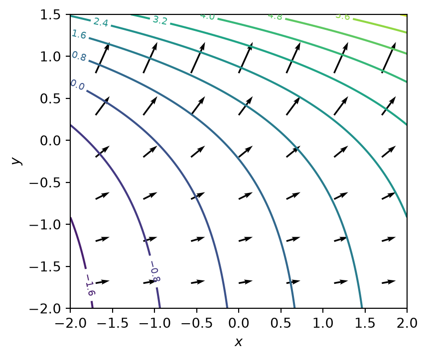
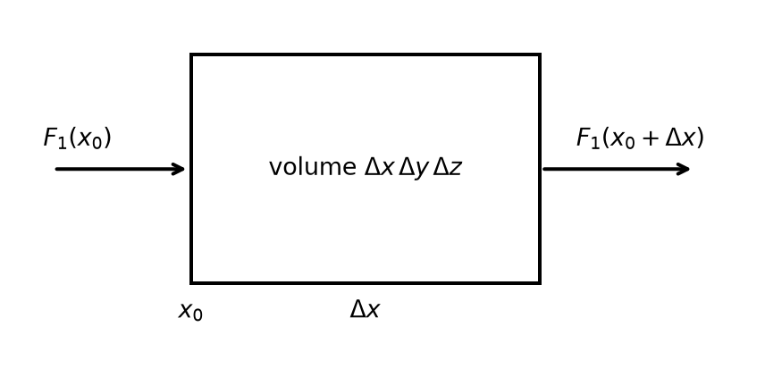
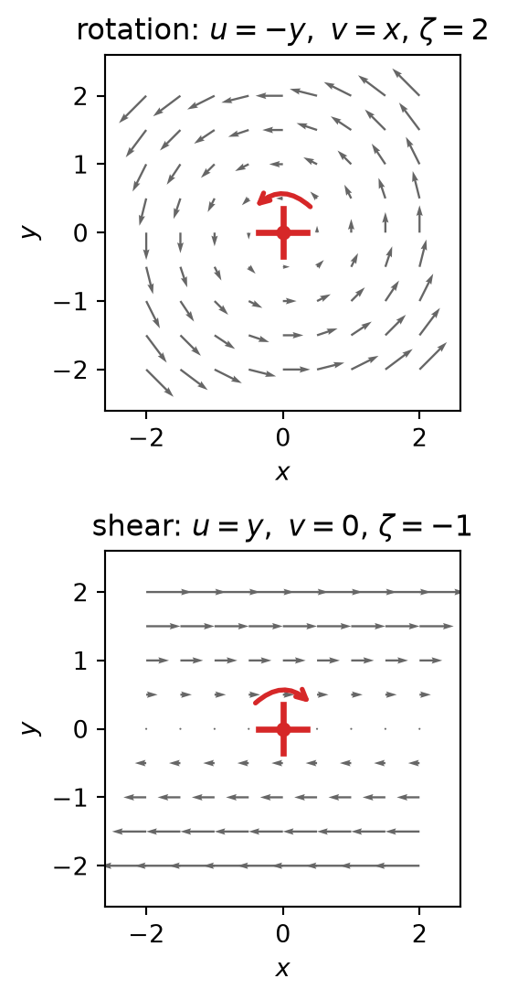
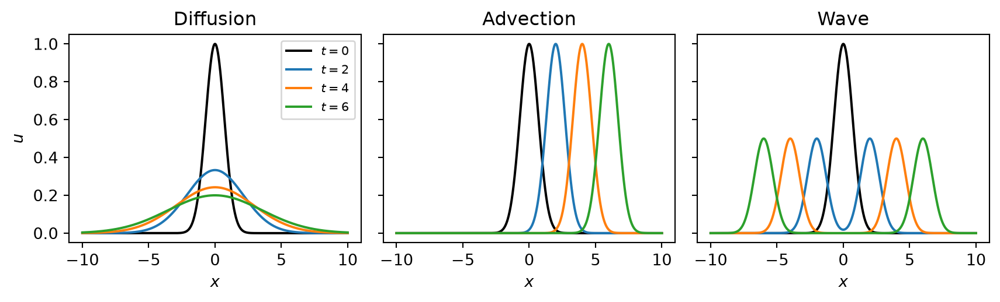

2 Governing equations and their classification
NoteLearning goals
After this unit you can
- compute and interpret gradient, divergence, curl and Laplacian,
- derive a conservation law from a balance over a control volume,
- classify a differential equation by order, linearity and type,
- recognise the prototype equations for diffusion, advection and waves in the equations of atmospheric, hydrological and seismic models,
- choose initial and boundary conditions that make a problem well-posed.
Numerical modelling starts on paper with the classification of the problem. The type of an equation decides which numerical methods work and which fail. This unit provides the language: the operators of vector calculus, the conservation laws built from them, the classification of the resulting equations, and the equations of this lecture with their types.
2.1 Vector calculus recap
2.1.1 Derivatives
If the unknown depends on a single variable, for example \(u(t)\), its rate of change is the ordinary derivative \(\mathrm{d}u/\mathrm{d}t\). If it depends on several variables, for example \(u(x, t)\), the partial derivatives \(\partial u/\partial t\) and \(\partial u/\partial x\) give the rate of change with respect to one variable while the others are held fixed. Derivatives of order \(n\) are written \(\mathrm{d}^n u/\mathrm{d}t^n\) and \(\partial^n u/\partial x^n\). We also use the short forms \(u_t\), \(u_x\), \(u_{xx}\).
2.1.2 Vectors
A vector in the plane is written \(\vec v = v_1 \vec i + v_2 \vec j\), in space \(\vec v = v_1 \vec i + v_2 \vec j + v_3 \vec k\), where \(\vec i, \vec j, \vec k\) are the unit vectors along the coordinate axes. Its magnitude is
\[ \| \vec v \| = \sqrt{v_1^2 + v_2^2 + v_3^2}, \]
and the unit vector in the direction of \(\vec v\) is \(\vec v / \|\vec v\|\).
2.1.3 The gradient
The gradient of a scalar field \(f(x, y, z)\) is the vector
\[ \operatorname{grad} f = \nabla f = \frac{\partial f}{\partial x} \vec i + \frac{\partial f}{\partial y} \vec j + \frac{\partial f}{\partial z} \vec k . \]
It has two geometric properties, shown in Figure 2.1.
- \(\nabla f\) points in the direction in which \(f\) increases fastest, and is perpendicular to the contour of \(f\) through the point.
- \(\|\nabla f\|\) is the rate of change in that direction. It is large where the contours are close together.
In physics, gradients drive fluxes: heat flows down the temperature gradient, groundwater flows down the gradient of hydraulic head, and the pressure gradient accelerates the wind.
TipExercise: gradient of \(f(x, y) = x + e^{y}\) at the point \((1, 1)\)
\(\nabla f = \vec i + e^{y} \vec j\), so \(\nabla f(1, 1) = \vec i + e \, \vec j\). The maximum rate of change at this point is \(\|\nabla f\| = \sqrt{1 + e^2} \approx 2.90\).
2.1.4 The divergence
The divergence of a vector field \(\vec F\) measures the outflow per unit volume at a point. Geometrically, it is the flux out of a small closed surface \(S\) around the point, divided by the enclosed volume \(V\), in the limit of vanishing volume:
\[ \operatorname{div} \vec F = \nabla \cdot \vec F = \lim_{V \to 0} \frac{1}{V} \oint_S \vec F \cdot \mathrm{d}\vec A . \tag{2.1}\]
Here \(\mathrm{d}\vec A\) is the surface element with the direction of the outward normal. In Cartesian coordinates the divergence is
\[ \nabla \cdot \vec F = \frac{\partial F_1}{\partial x} + \frac{\partial F_2}{\partial y} + \frac{\partial F_3}{\partial z} . \tag{2.2}\]
Why do both definitions agree? Consider a small box with one corner at \((x_0, y_0, z_0)\) and edge lengths \(\Delta x, \Delta y, \Delta z\) (Figure 2.2). On the face at \(x = x_0\) the outward normal is \(-\vec i\). If \(\vec F\) is approximately constant over this small face, the flux through it is
\[ \int_{S_1} \vec F \cdot \mathrm{d}\vec A \approx -F_1(x_0, y_0, z_0) \, \Delta y \, \Delta z . \]
On the opposite face at \(x = x_0 + \Delta x\) the outward normal is \(+\vec i\), and the flux is \(F_1(x_0 + \Delta x, y_0, z_0) \, \Delta y \, \Delta z\). The sum of the two is
\[ \frac{F_1(x_0 + \Delta x, y_0, z_0) - F_1(x_0, y_0, z_0)}{\Delta x} \, \Delta x \, \Delta y \, \Delta z \approx \frac{\partial F_1}{\partial x} \, \Delta x \, \Delta y \, \Delta z . \]
The other two pairs of faces contribute in the same way. Dividing the total flux by the volume \(\Delta x \, \Delta y \, \Delta z\) gives Equation 2.2.

This derivation is more than a proof. Summing fluxes over the faces of a small box is exactly what the finite volume method does (Chapter 9).
Two results that we use constantly:
Product rule. For a scalar field \(g\) and a vector field \(\vec F\),
\[ \nabla \cdot (g \vec F) = g \, \nabla \cdot \vec F + \vec F \cdot \nabla g . \tag{2.3}\]
Divergence theorem (Gauss). For a volume \(V\) with closed surface \(S\),
\[ \int_V \nabla \cdot \vec F \, \mathrm{d}V = \oint_S \vec F \cdot \mathrm{d}\vec A . \tag{2.4}\]
What flows out through the surface equals the sum of all sources inside.
2.1.5 Curl and Laplacian
The curl \(\nabla \times \vec F\) measures the local rotation of a vector field. For a horizontal wind field \(\vec v = u \vec i + v \vec j\) its vertical component is the relative vorticity
\[ \zeta = \frac{\partial v}{\partial x} - \frac{\partial u}{\partial y}, \]
a central quantity of dynamic meteorology. A small paddle wheel placed in the flow and carried along with it spins with the angular velocity \(\zeta/2\): anticlockwise for \(\zeta > 0\), clockwise for \(\zeta < 0\). Figure 2.3 shows two examples. In solid-body rotation, \(u = -y\), \(v = x\), we get \(\zeta = 1 - (-1) = 2\). In the shear flow \(u = y\), \(v = 0\), we get \(\zeta = 0 - 1 = -1\). The streamlines of the shear flow are straight lines, yet the flow has vorticity: the faster flow on the upper side of the wheel pushes it clockwise. Curl measures local rotation, not curved streamlines.

The Laplacian is the divergence of the gradient:
\[ \nabla^2 f = \nabla \cdot (\nabla f) = \frac{\partial^2 f}{\partial x^2} + \frac{\partial^2 f}{\partial y^2} + \frac{\partial^2 f}{\partial z^2} . \]
It compares the value of \(f\) at a point with the average over its neighbourhood. To see this, start in one dimension and take the two neighbours of \(x\) at distance \(h\). Their Taylor expansions are
\[ \begin{aligned} f(x + h) &= f(x) + h f'(x) + \frac{h^2}{2} f''(x) + \frac{h^3}{6} f'''(x) + O(h^4), \\ f(x - h) &= f(x) - h f'(x) + \frac{h^2}{2} f''(x) - \frac{h^3}{6} f'''(x) + O(h^4). \end{aligned} \]
Adding the two lines, the odd-order terms cancel:
\[ f(x + h) + f(x - h) = 2 f(x) + h^2 f''(x) + O(h^4). \]
Dividing by 2 and subtracting \(f(x)\) gives the difference between the average of the neighbours and the value at the point:
\[ \underbrace{\frac{f(x + h) + f(x - h)}{2}}_{\text{neighbour average}} - f(x) = \frac{h^2}{2} \, f''(x) + O(h^4). \]
In two dimensions we do the same in the \(x\) and the \(y\) direction, with the four neighbours \((x \pm h, y)\) and \((x, y \pm h)\). Each pair gives its own second derivative, exactly as in one dimension:
\[ \begin{aligned} f(x + h, y) + f(x - h, y) &= 2 f(x, y) + h^2 f_{xx} + O(h^4), \\ f(x, y + h) + f(x, y - h) &= 2 f(x, y) + h^2 f_{yy} + O(h^4). \end{aligned} \]
We call the average over the four neighbours \(\bar f\). Adding the two lines and dividing by 4 gives
\[ \bar f = f(x, y) + \frac{h^2}{4} \left( f_{xx} + f_{yy} \right) + O(h^4), \]
and hence
\[ \bar f - f(x, y) = \frac{h^2}{4} \, \nabla^2 f + O(h^4). \]
In three dimensions, with six neighbours, the factor is \(h^2/6\). So, up to a positive factor, the Laplacian is the amount by which the neighbourhood average exceeds the value at the point:
- \(\nabla^2 f < 0\): \(f\) is larger than its surroundings, as at a local maximum (a peak);
- \(\nabla^2 f > 0\): \(f\) is smaller than its surroundings, as at a local minimum (a trough);
- \(\nabla^2 f = 0\): \(f\) equals the average of its surroundings. Such functions are called harmonic; they have no interior maxima or minima.
This is why the Laplacian appears in every equation that describes smoothing. In the diffusion equation \(\partial u/\partial t = D \nabla^2 u\) with \(D > 0\), \(u\) decreases where it lies above the average of its neighbourhood and increases where it lies below. Peaks are eroded, troughs are filled, and the field approaches its local average. Rearranged, the formula above is also the finite difference approximation
\[ \nabla^2 f \approx \frac{f(x + h, y) + f(x - h, y) + f(x, y + h) + f(x, y - h) - 4 f(x, y)}{h^2} \]
that we will use for elliptic and parabolic problems.
2.2 Conservation laws
Nearly all equations of this lecture state that a quantity is conserved: mass, momentum or energy. They are all derived with the same argument.
Let \(u\) be the density of the conserved quantity (amount per volume) and \(\vec F\) its flux (amount per area and time). The amount inside a fixed volume \(V\) changes only by flux through the surface and by sources \(s\) (amount per volume and time) inside:
\[ \frac{\mathrm{d}}{\mathrm{d}t} \int_V u \, \mathrm{d}V = - \oint_S \vec F \cdot \mathrm{d}\vec A + \int_V s \, \mathrm{d}V . \tag{2.5}\]
The minus sign appears because \(\mathrm{d}\vec A\) points outward. We turn this balance into a differential equation in three steps.
- The volume is fixed in space, so the time derivative can be taken inside the integral: \(\frac{\mathrm{d}}{\mathrm{d}t} \int_V u \, \mathrm{d}V = \int_V \frac{\partial u}{\partial t} \, \mathrm{d}V\).
- The divergence theorem Equation 2.4 converts the surface integral into a volume integral: \(\oint_S \vec F \cdot \mathrm{d}\vec A = \int_V \nabla \cdot \vec F \, \mathrm{d}V\).
- All terms are now integrals over the same volume and can be collected:
\[ \int_V \left( \frac{\partial u}{\partial t} + \nabla \cdot \vec F - s \right) \mathrm{d}V = 0 . \]
This holds for every volume \(V\), however small and wherever it is placed. That is only possible if the integrand itself vanishes everywhere, which gives the differential form
\[ \frac{\partial u}{\partial t} + \nabla \cdot \vec F = s . \tag{2.6}\]
Equation 2.6 is a prognostic equation for \(u\), but it is not yet closed, because it contains the unknown flux. A flux law (constitutive relation) expresses \(\vec F\) in terms of \(u\). Two flux laws cover most of this lecture.
Advective flux. The quantity is carried along by a velocity field \(\vec v\):
\[ \vec F = \vec v \, u . \]
Diffusive flux. The quantity flows down its own gradient:
\[ \vec F = -D \, \nabla u . \]
The second law has many names, depending on the quantity.
| Law | Flux | Driven by | Coefficient |
|---|---|---|---|
| Fourier | heat | temperature gradient | thermal conductivity |
| Fick | dissolved substance | concentration gradient | diffusion coefficient |
| Darcy | groundwater | gradient of hydraulic head | hydraulic conductivity |
We insert the total flux \(\vec F = \vec v \, u - D \, \nabla u\) into Equation 2.6 and keep track of every sign. The divergence is linear, so it acts on the two parts separately:
\[ \nabla \cdot \vec F = \nabla \cdot (\vec v \, u) + \nabla \cdot (-D \, \nabla u) = \nabla \cdot (\vec v \, u) - \nabla \cdot (D \, \nabla u) . \]
Inserted into Equation 2.6:
\[ \frac{\partial u}{\partial t} + \nabla \cdot (\vec v \, u) - \nabla \cdot (D \, \nabla u) = s . \]
Moving the diffusion term to the right-hand side changes its sign once more, which gives the advection–diffusion equation
\[ \frac{\partial u}{\partial t} + \nabla \cdot (\vec v \, u) = \nabla \cdot (D \, \nabla u) + s . \tag{2.7}\]
The diffusion term now carries a plus sign. Two minus signs have cancelled: the one from the outward normal in Equation 2.5 (flux out of the volume reduces \(u\)) and the one from the flux law (the flux points down the gradient).
WarningKeep track of the signs
Lost or doubled minus signs are among the most frequent and most time-consuming errors in numerical modelling, in course projects as well as in research codes. A code with a sign error usually runs; it just gives wrong results, and the error is often found only after days of debugging. The signs depend on conventions that differ between textbooks, disciplines and codes:
- Direction of the normal: outward (as here) or inward.
- Flux law: \(\vec F = -D \nabla u\), or a flux defined positive in the direction of decreasing \(u\).
- Vertical coordinate: \(z\) pointing up (height) or down (depth, common in hydrology and seismology). Gravity terms change sign with it.
- Operator: many solvers are written for \(-\nabla^2 u = f\), because the matrix of \(-\nabla^2\) is positive definite (Chapter 4); others for \(\nabla^2 u = f\).
- Source term: \(s > 0\) as a source or as a sink (e.g. extraction from a well, or evaporation).
Three habits prevent most of these errors:
- Write the convention down at the top of the derivation and in the code (which direction is positive, what the flux means).
- Check the physics of the result. In \(\partial u/\partial t = D \nabla^2 u\), at a maximum \(\nabla^2 u < 0\) (see the Laplacian above), so \(u\) must decrease there. With the wrong sign the maximum grows; this is anti-diffusion, and it is unstable.
- Test the code on a case with a known answer: a Gaussian must spread and flatten, the total amount \(\int u \, \mathrm{d}V\) must stay constant without sources, and water must flow from high to low hydraulic head.
ImportantFlux form and advective form
With the product rule Equation 2.3 the advection term becomes \(\nabla \cdot (\vec v u) = \vec v \cdot \nabla u + u \, \nabla \cdot \vec v\). For a divergence-free (incompressible) flow the last term vanishes and the equation can be written in advective form, \(\partial u/\partial t + \vec v \cdot \nabla u = \dots\)
The two forms are mathematically equivalent. Their discretizations are not. A discretization of the flux form conserves the total amount of \(u\) exactly, because what leaves one grid cell enters its neighbour. A discretization of the advective form in general does not (Chapter 14).
2.3 Classification of differential equations
2.3.1 Ordinary and partial differential equations
If the unknown depends on one independent variable, the equation contains only ordinary derivatives and is an ordinary differential equation (ODE). An example is the equation for the charge \(Q(t)\) on a capacitor in a circuit with inductance \(L\), resistance \(R\) and capacitance \(C\):
\[ L \frac{\mathrm{d}^2 Q}{\mathrm{d}t^2} + R \frac{\mathrm{d}Q}{\mathrm{d}t} + \frac{1}{C} Q = E(t) . \]
If the unknown depends on several independent variables, the equation contains partial derivatives and is a partial differential equation (PDE). The advection–diffusion equation Equation 2.7 is a PDE.
2.3.2 Systems
Several unknowns coupled by several equations form a system. The predator–prey equations
\[ \frac{\mathrm{d}x}{\mathrm{d}t} = a x - \alpha x y, \qquad \frac{\mathrm{d}y}{\mathrm{d}t} = -c y + \gamma x y \]
for the number of prey \(x\) and predators \(y\) are a system of two ODEs. The models of the atmosphere and the ocean are systems of PDEs, one for each prognostic variable.
2.3.3 Order
The order of a differential equation is the order of the highest derivative in it. It determines how many initial and boundary conditions are needed.
Every ODE of order \(n\) can be rewritten as a system of \(n\) first-order ODEs. For Newton’s law Equation 1.1 we introduce the velocity \(v = \mathrm{d}u/\mathrm{d}t\) as a second unknown:
\[ \frac{\mathrm{d}u}{\mathrm{d}t} = v, \qquad \frac{\mathrm{d}v}{\mathrm{d}t} = \frac{F}{m} . \]
This is important in practice: numerical methods and software for ODEs are written for first-order systems. PDEs of second order in time can be treated in the same way; for seismic waves we will see that the wave equation is equivalent to a system of two first-order equations.
2.3.4 Linear and nonlinear
An equation is linear if the unknown and its derivatives appear only to the first power and are not multiplied with each other. The coefficients may depend on the independent variables. The general linear ODE of order \(n\) is
\[ a_0(t) \, y^{(n)} + a_1(t) \, y^{(n-1)} + \dots + a_n(t) \, y = g(t) . \]
It is homogeneous if \(g(t) = 0\).
| Equation | Order | Linear? |
|---|---|---|
| \(y' - 2 x y = e^{x}\) | 1 | yes |
| \(y'' + 4 y' + 4 y = 0\) | 2 | yes, homogeneous |
| \(y' = x / y\) | 1 | no |
| \(y'' + \sin y = x^2\) | 2 | no |
| \(y''' + 2 e^{t} y'' + y y' = t^4\) | 3 | no |
| \(u_t + c(x) \, u_x = 0\) | 1 | yes |
| \(u_t + u \, u_x = 0\) | 1 | no |
The last two rows deserve attention. Advection by a given velocity field \(c(x)\) is linear, even though the coefficient varies. Advection of the velocity by itself, as in the momentum equations of atmosphere and ocean, is nonlinear.
The pendulum equation
\[ \frac{\mathrm{d}^2 \theta}{\mathrm{d}t^2} + \frac{g}{L} \sin \theta = 0 \]
is nonlinear. For small angles \(\sin \theta \approx \theta\), and it becomes the linear equation of the harmonic oscillator. This linearization is a standard tool: the stability of numerical methods is analysed for linear equations, and the results are then applied to the nonlinear problem with care.
Linearity has a great practical advantage. Solutions of a linear homogeneous equation can be added (superposition), so that the solution can be analysed wave by wave (Chapter 4). Discretizing a linear PDE gives a linear system of algebraic equations; discretizing a nonlinear PDE gives a nonlinear system that has to be solved iteratively (Chapter 17).
2.3.5 Elliptic, parabolic, hyperbolic
The most important classification of PDEs concerns their type. Linear second-order PDEs in two independent variables have the general form
\[ a \, u_{xx} + 2 b \, u_{xy} + c \, u_{yy} + \text{lower-order terms} = f , \tag{2.8}\]
where the second variable \(y\) may be a space coordinate or time. The type is determined by the coefficients of the second derivatives alone:
| Type | Condition | Prototype | Eigenvalues of \(A\) |
|---|---|---|---|
| Elliptic | \(b^2 - ac < 0\) | Laplace, Poisson: \(u_{xx} + u_{yy} = f\) | same sign |
| Parabolic | \(b^2 - ac = 0\) | Diffusion: \(u_t = D u_{xx}\) | one is zero |
| Hyperbolic | \(b^2 - ac > 0\) | Wave: \(u_{tt} = c^2 u_{xx}\) | opposite signs |
The names come from the quadratic form \(q(x, y) = a x^2 + 2 b x y + c y^2\), whose contour \(q = 1\) is an ellipse or a hyperbola under the first and third condition. In matrix notation,
\[ q(x, y) = \begin{pmatrix} x & y \end{pmatrix} A \begin{pmatrix} x \\ y \end{pmatrix}, \qquad A = \begin{pmatrix} a & b \\ b & c \end{pmatrix}, \]
and the condition can be read off the signs of the eigenvalues of \(A\). To see why, we compute the eigenvalues. They are the roots of the characteristic polynomial
\[ \det(A - \lambda I) = \begin{vmatrix} a - \lambda & b \\ b & c - \lambda \end{vmatrix} = (a - \lambda)(c - \lambda) - b^2 = \lambda^2 - (a + c) \, \lambda + (ac - b^2) . \]
A quadratic polynomial with roots \(\lambda_1\) and \(\lambda_2\) can be written as \((\lambda - \lambda_1)(\lambda - \lambda_2) = \lambda^2 - (\lambda_1 + \lambda_2) \lambda + \lambda_1 \lambda_2\). Comparing the coefficients gives
\[ \lambda_1 + \lambda_2 = a + c , \qquad \lambda_1 \lambda_2 = ac - b^2 = \det A . \]
The eigenvalues are real, because \(A\) is symmetric. The discriminant of the characteristic polynomial confirms this: \((a + c)^2 - 4(ac - b^2) = (a - c)^2 + 4 b^2 \ge 0\). The sign of the product \(\lambda_1 \lambda_2\) therefore decides the type, and it is the opposite of the sign of \(b^2 - ac\):
- \(b^2 - ac < 0\): \(\lambda_1 \lambda_2 > 0\), both eigenvalues have the same sign (elliptic);
- \(b^2 - ac = 0\): \(\lambda_1 \lambda_2 = 0\), one eigenvalue is zero (parabolic);
- \(b^2 - ac > 0\): \(\lambda_1 \lambda_2 < 0\), the eigenvalues have opposite signs (hyperbolic).
The geometric meaning follows from the eigenvectors. Because \(A\) is symmetric, its eigenvectors are orthogonal, and in coordinates \((\xi, \eta)\) along the eigenvectors the mixed term disappears:
\[ q = \lambda_1 \xi^2 + \lambda_2 \eta^2 . \]
For \(\lambda_1, \lambda_2 > 0\) the contour \(q = 1\) is an ellipse with semi-axes \(1/\sqrt{\lambda_1}\) and \(1/\sqrt{\lambda_2}\). For eigenvalues of opposite sign it is a hyperbola. If \(\lambda_2 = 0\), \(q = \lambda_1 \xi^2\) does not depend on \(\eta\) at all, and \(q = 1\) degenerates into two parallel lines, the limiting case between ellipse and hyperbola. The same rotation of coordinates applied to the PDE removes the mixed derivative and gives its canonical form \(\lambda_1 u_{\xi\xi} + \lambda_2 u_{\eta\eta} + \text{lower-order terms} = f\). Elliptic equations then look like the Poisson equation, hyperbolic ones like the wave equation, and parabolic ones contain only one second derivative, like the diffusion equation.
As an example, take \(u_{xx} + 4 u_{xy} + u_{yy} = 0\), that is \(a = c = 1\) and \(b = 2\). The condition gives \(b^2 - ac = 4 - 1 = 3 > 0\): hyperbolic. The eigenvalues confirm this: \(\lambda_1 + \lambda_2 = 2\) and \(\lambda_1 \lambda_2 = 1 - 4 = -3\), so \(\lambda_1 = 3\) and \(\lambda_2 = -1\), of opposite sign. The mixed derivative hides the type: both pure second derivatives have the same sign, yet the equation is a wave equation in rotated coordinates.
The eigenvalue formulation carries over to more than two variables, where the condition \(b^2 - ac\) no longer exists (Wick 2020). With \(n\) independent variables, \(A\) is a symmetric \(n \times n\) matrix. The equation is elliptic if all eigenvalues have the same sign, parabolic if one eigenvalue is zero and the others have the same sign, and hyperbolic if one eigenvalue has the opposite sign of the others. The heat equation \(u_t = D (u_{xx} + u_{yy})\) in the variables \((x, y, t)\), for example, has the eigenvalues \(D\), \(D\) and \(0\) (up to an overall sign): parabolic. We meet quadratic forms again when we solve linear systems by minimisation (Chapter 11).
TipCheck: classify the diffusion equation with this rule
Write \(u_t - D u_{xx} = 0\) with the variables \((x, t)\) in the form Equation 2.8. The only second derivative is \(u_{xx}\) with \(a = -D\), and \(b = c = 0\). Hence \(b^2 - ac = 0\): parabolic. For the wave equation \(u_{tt} - c_0^2 u_{xx} = 0\) we have \(a = -c_0^2\), \(b = 0\), \(c = 1\) and \(b^2 - ac = c_0^2 > 0\): hyperbolic.
What the three types mean physically is shown by their prototypes in the next section.
2.4 Prototype equations
Three special cases of conservation laws in one space dimension serve as prototypes, one for each type of the classification. Each has its own physical behaviour, and each requires its own numerical treatment.
Diffusion equation (heat equation), from Equation 2.7 with \(\vec v = 0\) and constant \(D\); parabolic:
\[ \frac{\partial u}{\partial t} = D \frac{\partial^2 u}{\partial x^2} . \tag{2.9}\]
Advection equation, with constant velocity \(c\) and \(D = 0\); of first order and hyperbolic:
\[ \frac{\partial u}{\partial t} + c \frac{\partial u}{\partial x} = 0 . \tag{2.10}\]
Wave equation, with wave speed \(c\); hyperbolic:
\[ \frac{\partial^2 u}{\partial t^2} = c^2 \frac{\partial^2 u}{\partial x^2} . \tag{2.11}\]
On an unbounded domain all three have exact solutions for the initial condition \(u(x, 0) = f(x)\).
Advection. The solution is \(u(x, t) = f(x - ct)\): the initial shape moves with velocity \(c\) and does not change. Information travels along the lines \(x - ct = \text{const}\), the characteristics of the equation, with the finite speed \(c\); first-order equations with this property are called hyperbolic, like the wave equation. To verify the solution, set \(\xi = x - ct\) and apply the chain rule:
\[ \frac{\partial u}{\partial t} = f'(\xi) \frac{\partial \xi}{\partial t} = -c \, f'(\xi), \qquad \frac{\partial u}{\partial x} = f'(\xi) \frac{\partial \xi}{\partial x} = f'(\xi) \quad \Longrightarrow \quad \frac{\partial u}{\partial t} + c \frac{\partial u}{\partial x} = 0 . \]
This verifies the solution but does not tell us where it comes from. The box derives it.
NoteDerivation: the method of characteristics
We look at \(u\) along a curve \(x(t)\) in the \((x, t)\) plane, that is at the function \(U(t) = u(x(t), t)\). Its rate of change follows from the chain rule for a function of two variables, both of which depend on \(t\):
\[ \frac{\mathrm{d}U}{\mathrm{d}t} = \frac{\partial u}{\partial x} \frac{\mathrm{d}x}{\mathrm{d}t} + \frac{\partial u}{\partial t} \frac{\mathrm{d}t}{\mathrm{d}t} = \frac{\partial u}{\partial t} + \frac{\mathrm{d}x}{\mathrm{d}t} \, \frac{\partial u}{\partial x} . \]
The right-hand side looks like the left-hand side of Equation 2.10. We choose the curve such that the two agree, that is with
\[ \frac{\mathrm{d}x}{\mathrm{d}t} = c . \]
Integrating from \(t = 0\), where the curve starts at the point \(x_0\), gives the straight line \(x(t) = x_0 + c t\). Along this line the PDE becomes an ODE:
\[ \frac{\mathrm{d}U}{\mathrm{d}t} = \frac{\partial u}{\partial t} + c \, \frac{\partial u}{\partial x} = 0 . \]
So \(U\) does not change, and \(u\) keeps the value it had at the starting point:
\[ u(x_0 + c t, t) = U(t) = U(0) = u(x_0, 0) = f(x_0) . \]
Finally we express \(x_0\) by the point \((x, t)\) we are interested in. The characteristic through \((x, t)\) started at \(x_0 = x - c t\), hence
\[ u(x, t) = f(x - c t) . \]
The derivation shows more than the verification:
- Uniqueness. Every point \((x, t)\) lies on exactly one characteristic, and the value there is fixed by the initial condition. There is no other solution.
- Domain of dependence. \(u(x, t)\) depends only on the initial value at the single point \(x - ct\), not on \(f\) anywhere else. Information travels along the characteristics with speed \(c\).
- Generalisation. The same steps work for a variable velocity \(c(x, t)\): the characteristics are the solutions of the ODE \(\mathrm{d}x/\mathrm{d}t = c(x, t)\), are no longer straight, and \(u\) is still constant along them. We return to this view of advection in the semi-Lagrangian methods (Chapter 14).
Wave equation. Differentiating once more gives \(\partial^2 u / \partial t^2 = c^2 f''(\xi)\) and \(\partial^2 u / \partial x^2 = f''(\xi)\), so \(f(x - ct)\) also solves the wave equation. The sign of \(c\) drops out in the second derivative, so \(f(x + ct)\) is a solution as well. For zero initial velocity the solution is \(u(x, t) = \tfrac12 [f(x - ct) + f(x + ct)]\): the initial shape splits into two halves that travel in opposite directions. At \(t = 0\) the two halves add up to \(f(x)\), and their time derivatives, \(\mp \tfrac12 c f'(x)\), cancel.
Diffusion. For the Gaussian initial condition \(f(x) = e^{-x^2 / w^2}\) the solution remains a Gaussian that widens and flattens,
\[ u(x, t) = \frac{w}{\sqrt{w^2 + 4 D t}} \exp \left( - \frac{x^2}{w^2 + 4 D t} \right) . \]
The squared width grows linearly in time, \(w^2 + 4Dt\), and the amplitude decreases such that the integral of \(u\), the total amount, stays constant.
import numpy as np
import matplotlib.pyplot as plt
x = np.linspace(-10, 10, 801)
w = 1.0 # width of the initial Gaussian
f = lambda x: np.exp(-(x / w) ** 2)
D, c = 1.0, 1.0
def diffusion(x, t):
return w / np.sqrt(w**2 + 4 * D * t) * np.exp(-x**2 / (w**2 + 4 * D * t))
solutions = {
"Diffusion": diffusion,
"Advection": lambda x, t: f(x - c * t),
"Wave": lambda x, t: 0.5 * (f(x - c * t) + f(x + c * t)),
}
fig, axes = plt.subplots(1, 3, figsize=(9, 2.8), sharey=True)
for ax, (name, u) in zip(axes, solutions.items()):
ax.plot(x, f(x), "k", label="$t = 0$")
for t in [2, 4, 6]:
ax.plot(x, u(x, t), label=f"$t = {t}$")
ax.set_title(name)
ax.set_xlabel("$x$")
axes[0].set_ylabel("$u$")
axes[0].legend(fontsize=8)
plt.tight_layout()
plt.show()
Figure 2.4 contains the most important physical distinction of this lecture. Diffusion smooths and has no direction. Advection and waves transport information with a finite speed and preserve the shape. A good numerical method must reproduce this behaviour: it must not move a diffusing profile, and it must not smear or distort a travelling one. The second requirement turns out to be the harder one (Chapter 13).
A fourth prototype, the elliptic one, has no time derivative. In steady state, \(\partial u / \partial t = 0\), the diffusion equation with a source becomes the Poisson equation
\[ - \nabla^2 u = f , \tag{2.12}\]
and for \(f = 0\) the Laplace equation. It describes equilibria: steady temperature and groundwater fields, the gravitational potential, the pressure in an incompressible fluid.
Figure 2.4 and the Poisson equation show why the classification matters: the three types behave differently.
| Elliptic | Parabolic | Hyperbolic | |
|---|---|---|---|
| Describes | equilibrium | smoothing, relaxation to equilibrium | propagation |
| A disturbance is felt | everywhere at once | everywhere at once, but damped | only where the wave has arrived; finite speed |
| Solution is | smoother than the data | smoother than the initial condition | as rough as the initial condition |
| Needs | boundary conditions on the whole boundary | initial condition and boundary conditions | initial conditions; boundary conditions only where information enters |
| Numerical task | solve one large linear system | time stepping, often implicit | time stepping with attention to the propagation speed |
2.5 The equations of this lecture
The equations of real models are combinations of the prototypes. We list the ones that appear in later units, so that you recognise the building blocks.
Shallow water equations. A layer of fluid of depth \(h\) and velocity \(u\) over a flat bottom, in one dimension and without rotation:
\[ \begin{aligned} \frac{\partial h}{\partial t} + \frac{\partial (h u)}{\partial x} &= 0, \\ \frac{\partial u}{\partial t} + u \frac{\partial u}{\partial x} + g \frac{\partial h}{\partial x} &= 0 . \end{aligned} \tag{2.13}\]
The first equation is conservation of mass in flux form, the second is conservation of momentum in advective form. The system is nonlinear.
To see what it describes we linearize it about a state of rest with depth \(H\). We write \(h = H + \eta\) and assume that the surface elevation \(\eta\) and the velocity \(u\) are small, so that products of small quantities can be neglected: \(h u \approx H u\) and \(u \, \partial u / \partial x \approx 0\). What remains is
\[ \frac{\partial \eta}{\partial t} + H \frac{\partial u}{\partial x} = 0, \qquad \frac{\partial u}{\partial t} + g \frac{\partial \eta}{\partial x} = 0 . \tag{2.14}\]
These are two first-order equations for two unknowns. We combine them into one second-order equation for \(\eta\) alone by eliminating \(u\). The two equations are coupled through derivatives of \(u\): the first contains \(\partial u / \partial x\), the second \(\partial u / \partial t\). Differentiating the first equation with respect to \(t\) and the second with respect to \(x\) produces the same mixed derivative of \(u\) in both. Since \(H\) and \(g\) are constants, they stay in front of the derivatives:
\[ \frac{\partial^2 \eta}{\partial t^2} + H \frac{\partial^2 u}{\partial t \, \partial x} = 0, \qquad \frac{\partial^2 u}{\partial x \, \partial t} + g \frac{\partial^2 \eta}{\partial x^2} = 0 . \]
For smooth functions the order of differentiation does not matter (Schwarz’s theorem), so \(\partial^2 u / \partial t \, \partial x = \partial^2 u / \partial x \, \partial t\). The second equation gives this mixed derivative in terms of \(\eta\):
\[ \frac{\partial^2 u}{\partial x \, \partial t} = - g \frac{\partial^2 \eta}{\partial x^2} . \]
Inserting it into the first equation,
\[ \frac{\partial^2 \eta}{\partial t^2} + H \left( - g \frac{\partial^2 \eta}{\partial x^2} \right) = 0 , \]
and moving the second term to the right-hand side gives
\[ \frac{\partial^2 \eta}{\partial t^2} = g H \frac{\partial^2 \eta}{\partial x^2} , \]
the wave equation Equation 2.11 with \(c = \sqrt{g H}\). The shallow water equations describe gravity waves; they are a hyperbolic system. Note how the signs work out: the minus sign from solving the second equation for the mixed derivative and the one from moving the term to the right-hand side combine to \(+gH\). Since \(g H > 0\) the result is a wave equation; with \(-gH\) it would be elliptic, and there would be no waves. Eliminating \(\eta\) instead, by differentiating the first equation with respect to \(x\) and the second with respect to \(t\), gives the same wave equation for \(u\). For an ocean of depth 4 km, \(c = \sqrt{9.81 \cdot 4000}\) m/s \(\approx 200\) m/s, the speed of a tsunami. With rotation added the system contains much of the dynamics of the atmosphere and the ocean, which makes it the standard test bed for the numerical methods of weather and climate models (Chapter 15).
What makes a system of first-order equations hyperbolic? A first-order system
\[ \frac{\partial \vec q}{\partial t} + B \frac{\partial \vec q}{\partial x} = 0 \]
is hyperbolic if the matrix \(B\) has real eigenvalues and a full set of eigenvectors. It can then be decomposed into advection equations, one for each eigenvalue, and the eigenvalues are the speeds.
For the linearized shallow water equations Equation 2.14, \(\vec q = (\eta, u)^T\) and
\[ B = \begin{pmatrix} 0 & H \\ g & 0 \end{pmatrix}, \qquad \det (B - \lambda I) = \lambda^2 - g H = 0 \quad \Longrightarrow \quad \lambda = \pm \sqrt{g H} . \]
The two eigenvalues are the speeds of the gravity waves travelling to the right and to the left. For the full equations Equation 2.13 the same calculation gives \(u \pm \sqrt{g h}\): the waves are in addition carried by the flow.
Primitive equations. The equations of atmospheric and ocean models are the conservation laws for momentum, mass and energy of a stratified fluid on the rotating sphere, with the hydrostatic approximation in the vertical. Each is an advection equation for one prognostic variable with source terms: pressure gradient and Coriolis force for momentum, heating for temperature, phase changes for humidity. Their dynamics are dominated by advection and waves, that is, by hyperbolic behaviour; diffusion terms represent the mixing by turbulence.
Groundwater flow. Conservation of mass with Darcy’s law gives a diffusion equation for the hydraulic head \(h\),
\[ S_s \frac{\partial h}{\partial t} = \nabla \cdot (K \, \nabla h) + q , \tag{2.15}\]
with specific storage \(S_s\), hydraulic conductivity \(K\) and sources \(q\). It is parabolic, and in steady state elliptic. \(K\) varies in space over many orders of magnitude, which is the main numerical difficulty (Chapter 9).
Richards equation. In the unsaturated soil, water content \(\theta\) and hydraulic conductivity \(K\) depend on the pressure head \(\psi\):
\[ \frac{\partial \theta(\psi)}{\partial t} = \nabla \cdot \left[ K(\psi) \, \nabla (\psi + z) \right] . \tag{2.16}\]
The equation is a parabolic diffusion equation whose coefficients depend strongly on the solution. It is the prototype of a nonlinear problem in this lecture (Chapter 17).
Seismic waves. Conservation of momentum with Hooke’s law gives, for a shear wave propagating in the \(x\) direction with particle velocity \(v\) and shear stress \(\sigma\),
\[ \rho \frac{\partial v}{\partial t} = \frac{\partial \sigma}{\partial x}, \qquad \frac{\partial \sigma}{\partial t} = \mu \frac{\partial v}{\partial x} , \tag{2.17}\]
with density \(\rho\) and shear modulus \(\mu\). For constant \(\rho\) and \(\mu\) we differentiate the first equation with respect to \(t\) and insert the second:
\[ \rho \frac{\partial^2 v}{\partial t^2} = \frac{\partial}{\partial x} \frac{\partial \sigma}{\partial t} = \mu \frac{\partial^2 v}{\partial x^2} \quad \Longrightarrow \quad \frac{\partial^2 v}{\partial t^2} = \frac{\mu}{\rho} \frac{\partial^2 v}{\partial x^2} . \]
This is the wave equation Equation 2.11 with the shear wave speed \(c = \sqrt{\mu / \rho}\), and Equation 2.17 is a hyperbolic system. The structure is the same as in Equation 2.14: two first-order equations for two variables that drive each other.
Real models mix the types. The advection–diffusion equation Equation 2.7 is formally parabolic, but behaves like a hyperbolic equation when advection dominates. The same holds for the Navier–Stokes equations at high Reynolds number. Numerical models therefore often treat the terms of one equation with different methods (Chapter 18).
2.6 Initial and boundary conditions
A differential equation has many solutions. Initial and boundary conditions select one.
Initial conditions prescribe the state at \(t = 0\). Their number equals the order of the time derivative: one for the diffusion equation, \(u(x, 0) = u_0(x)\), and two for the wave equation, \(u(x, 0)\) and \(u_t(x, 0)\).
Boundary conditions prescribe the behaviour on the boundary \(\partial\Omega\) of the domain \(\Omega\). For second-order equations three types are used, where \(\partial u / \partial n\) is the derivative in the direction of the outward normal.
| Type | Condition on \(\partial\Omega\) | Physical meaning | Example |
|---|---|---|---|
| Dirichlet | \(u = g\) | the value is prescribed | fixed temperature; water level of a lake bounding an aquifer |
| Neumann | \(\partial u / \partial n = g\) | the flux is prescribed | insulated wall or impermeable layer (\(g = 0\)); prescribed heat flux |
| Robin | \(\partial u / \partial n + \alpha u = g\) | the flux depends on the value | heat exchange with the surrounding air |
A condition with \(g = 0\) is called homogeneous. On each part of the boundary exactly one condition is prescribed.
A fourth kind is common in atmospheric modelling: periodic boundary conditions, \(u(0, t) = u(L, t)\). On a latitude circle they are exact. Limited-area models face the opposite situation: their lateral boundaries are artificial, and waves must be able to leave the domain without reflection. Such open boundaries are a subject of their own (Chapter 16).
2.7 Well-posed problems
A problem is well-posed in the sense of Hadamard1 if
- a solution exists,
- the solution is unique,
- the solution depends continuously on the data, that is on initial conditions, boundary conditions and parameters.
If one of the conditions is violated, a numerical solution is meaningless or impossible. Three examples show that this is of practical relevance.
Too few conditions. The Poisson equation with Neumann conditions on the whole boundary prescribes only fluxes. If \(u\) is a solution, so is \(u\) plus any constant, which violates condition 2. Moreover a solution exists only if the prescribed boundary fluxes balance the sources, which concerns condition 1. In the discrete problem this shows up as a singular matrix.
The wrong direction of time. The diffusion equation smooths. Solving it backward in time, in order to find the initial state that led to an observed state, must therefore roughen: small-scale errors in the observed state are amplified without bound, which violates condition 3. Problems of this kind, where causes are inferred from effects, are the inverse problems of geophysics and the data assimilation problem of meteorology. They need additional information to become well-posed (Chapter 21).
The wrong kind of conditions. Hadamard’s own example shows that the conditions must match the type of the equation. Take the Laplace equation in the upper half plane \(y > 0\) and prescribe, as for the wave equation, the value and the normal derivative on the line \(y = 0\):
\[ u_{xx} + u_{yy} = 0, \qquad u(x, 0) = 0, \qquad u_y(x, 0) = \frac{1}{n} \sin(n x) . \]
We look for a solution of the form \(u = \sin(n x) \, Y(y)\). Inserting it, \(u_{xx} = -n^2 \sin(n x) \, Y\) and \(u_{yy} = \sin(n x) \, Y''\), so the PDE becomes the ODE \(Y'' = n^2 Y\) with the general solution \(Y = A \cosh(n y) + B \sinh(n y)\). The first condition gives \(Y(0) = A = 0\). The second gives \(Y'(0) = n B = 1/n\), so \(B = 1/n^2\) and
\[ u(x, y) = \frac{1}{n^2} \sin(n x) \sinh(n y) . \]
Now let \(n \to \infty\). The data tend to zero, \(|u_y(x, 0)| \le 1/n\), and for zero data the solution is \(u = 0\). But at any fixed height \(y > 0\) the solution grows without bound, since \(\sinh(n y) \approx \tfrac12 e^{n y}\): at \(y = 1\) and \(n = 20\), data of size \(0.05\) produce a solution of size \(\tfrac{1}{400} \sinh(20) \approx 6 \cdot 10^5\). Condition 3 is violated.
The same data are harmless for the wave equation \(u_{tt} = u_{xx}\) with \(t\) in place of \(y\). There the ODE is \(Y'' = -n^2 Y\), the hyperbolic functions become trigonometric ones, and the solution \(u = \frac{1}{n^2} \sin(n x) \sin(n t)\) stays below \(1/n^2\). The only difference is the sign in front of \(n^2\), and that sign is the type of the equation. An elliptic equation needs one condition on the whole boundary, not two conditions on part of it (see the table in Section 2.4). In geophysics this example appears as the downward continuation of gravity and magnetic fields: computing the field at depth from measurements at the surface amplifies the short wavelengths exponentially.
Condition 3 for the mathematical problem has a counterpart for the numerical method: stability (Chapter 6). And well-posed does not mean predictable for all times. The equations of the atmosphere are well-posed, yet small errors in the initial state grow so fast that the forecast loses its value after about two weeks (Chapter 8).
2.8 Summary
- Gradient, divergence, curl and Laplacian are the building blocks of all equations in this lecture. The divergence is the net outflow per volume.
- A conservation law states that the amount in a volume changes only by the flux through its surface and by sources: \(\partial u / \partial t + \nabla \cdot \vec F = s\). Advective and diffusive fluxes close the equation.
- Classify before you compute: ODE or PDE, order, linear or nonlinear, elliptic, parabolic or hyperbolic. The type decides the numerical method.
- The prototypes show what the types mean: diffusion smooths; advection and waves propagate with finite speed; the Poisson equation describes equilibria.
- The equations of atmospheric, hydrological and seismic models are combinations of the prototypes, and each can be classified the same way.
- A well-posed problem has the right number of initial and boundary conditions, and its solution depends continuously on the data.
2.9 Further reading
Boyce and DiPrima (2009), chapter 1, for the classification of ODEs; Wick (2020) for the classification of PDEs and well-posedness; Durran (2010), chapter 1, for the equations of geophysical fluid dynamics.
Jacques Hadamard (1865–1963), French mathematician, who formulated these conditions in 1902 and also proved the prime number theorem.↩︎